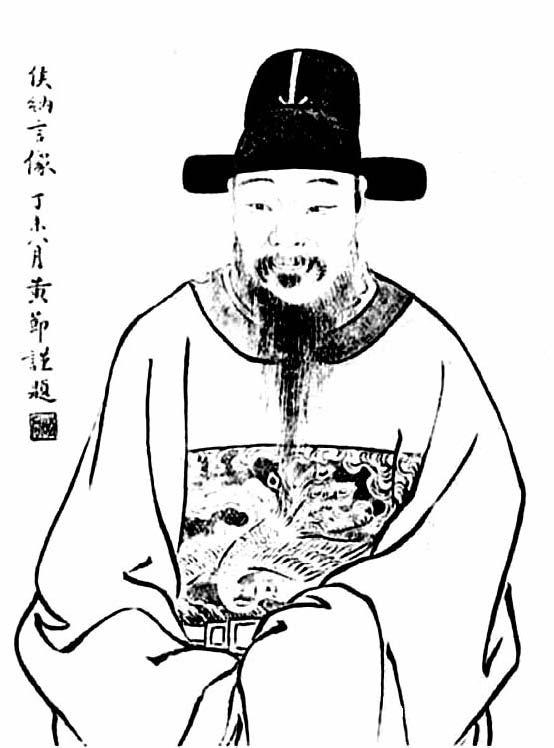
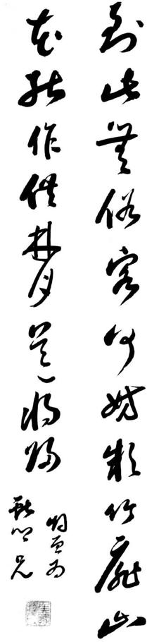
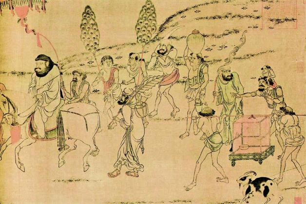

八
南方的抵抗，不限于少数人或个别群体，而有上下一体、不分阶层的全民性。且极具恒心与韧性，前仆后继，几年内，江、浙、皖、闽四地均可称“野火烧不尽，春风吹又生”。为便于观察，我们挑选两个比较完整、集中的事件，了解其情形。
扬州陷落，是一大标志，就此宣告清兵南侵事态不可改变，当时人们对此已非常清楚。乙酉年五月十三日，扬州消息传至嘉定——同日，赵之龙、钱谦益等在南京议定向满清投降，而朱由崧、马士英等已逃离，嘉定人尚不知也——他们仅从扬州陷落消息，即预测到前景，而有组织乡兵之议。从一开始，这就是民众的自发行为。知县钱默想溜之大吉，“百姓遮道止之，乃听士民议，按籍抽丁，以备他变。”[75]他们拦住县官，迫使他行使应有的职责。按籍抽丁，就是家家户户出人，全民皆兵。之后暂时平静，三十日，钱默还是逃走，乡兵一度散去。六月初四，清兵到嘉定，明朝吴淞总兵吴志葵每有骚扰，群众则尚未采取明显行动。闰六月十二日，满清下达薙发令，“至县，远近大哗，始谋举事矣。”[76]十三日，“人心愈愤”：
市上大呼曰：“安得官军来，为我保此发肤！”苟有倡义者，即揭竿相向矣。于是诸乡义兵，不约而起……六里内一呼响应，动以数万计，无不地自为守，人自为战者。[77]
昆山也同日起义，杀掉满清委派的县令。起义民众还主动攻打太仓，所以如此，因为那里在一些士大夫表率下，“城中无不辫发者。四境之民怨之。”[78]
嘉定抗清，确实是典型的民间自发现象。这体现于两点：一、有极大广泛性，“动以数万计”。二、明显带着民间自发现象的特征或局限性——缺乏组织，效率较差，又不计代价、不问后果，只靠一腔热血，激情使然。以下描述，便显现了这一点：
七月初一日庚戌，追击李成栋于娄塘，乡兵会者十余万人。成栋分骑力战，乡兵皆溃，遂屠娄塘，与太仓合。时，会兵砖桥东，不下十余万人，奈诸乡兵本村农乌合，推排挤塞，纷呶如聚蚊，多适为累。北兵每战必分左右翼，乡兵不识阵势，名为蟹螯阵。[79]
情形可悲，乃至可笑。不过，这种“村农乌合”、杂乱无章、“多适为累”的面貌，这种以刍荛之辈而敢然与野战军接杀、螳螂奋臂般的反抗，正好凸显了东南抗清的民众自发性。

侯峒曾像及墨迹。
侯纳言即侯峒曾，天启进士，与其弟岐曾共同领导嘉定抗清起义。失败后，嘉定遭清兵屠城。侯氏兄弟及所生诸子，或自尽或遭杀害。

侯峒曾墨迹。
再看两个单独的镜头。
闰六月十八日，清兵李成栋部进攻罗店，在一条河边，与当地乡兵遭遇：
与乡兵隔水语曰：“栋等不过奉命守吴淞，与罗店初无仇衅。今假道归娄东，幸诸君宽其一面。”乡兵支某、陆某等戟手骂曰：“汝曹槛羊牢豕耳。莫作此想。”[80]
罗店距吴淞不远。过去笔者母校在此办有农场，某年深秋，我曾随全班前来务农两周。其野渡舟横、衰草萋萋的水乡景象，至今在目。今睹此文，罗店记忆油然唤起。两相对照，颇讶于那样柔静的地方，也曾有性情如此刚烈的农夫。“槛羊牢豕”，不仅骂对方为牲畜，而且是被关起来、因而死定的牲畜。
不过，支、陆二农夫虽然豪气干云，却尚不能与一个名叫朱六的同乡相比：
有清将一人，失其姓名，身长八尺余，面色如铁，乘马押阵，偶失队。乡兵朱六，于道傍登溷边，北将单骑过其前，不意中突出抱之，同堕河中。北将仓卒拔刀，未及出槊，朱六用两手紧束之，疾呼求救。乡兵闻呼声甚迫，亟返视，见朱六正与北将相搏，溅水如涛山浪屋，大笑。争下水擒之，立刻枭斩，首级奇大，几如五升碗。[81]
从名字一望便知，这是最普通的农民。明代这种阶层的人，一般有姓无名，所谓名字，不过以排行代之。注目以上场景，我们不免要想一个问题：这位很可能大字不识的农民，究竟哪里得来一种精神，使他迸出惊人勇气和力量，敢于扑向如此健硕的劲敌？
真正大出意外的当数清兵。他们入关以来，所向披靡，一帆风顺，或许已习惯于受降。偏偏来到江南，这些吴侬软语、身形苗条、传说中胆小如豆的“蛮子”，反而誓死不从。从闰六月中旬到八月中旬，清兵用了两个月，反反复复，才算敉平。
一旦到手，就开始屠城。
屠城之事，入关前他们常干。努尔哈赤时期，对于所攻之城素事烧杀。不降杀，降亦杀；或洗掳一空，焚城而去。所以如此盖因当时女真形态未脱原始，征伐目的惟在财帛子女。这种情况到皇太极时，随着满清萌生入主中国之念而发生改变。1631年，围攻大凌河城，守将祖大寿抵抗极顽强，后送养子祖可法至清营为人质，一见面，诸贝勒即大为不解问道：“尔等死守空城何意？”祖可法回答，是因有辽东永平等处降民遭屠戮的前车之鉴。对此，岳讬贝勒当即表示：“辽东之事我等不胜追悔”[82]。过了二个月，岳讬向皇太极建言：“先年克辽东、广宁诛汉人拒命者，后复屠永平、滦州，以是人怀疑惧，纵极力晓谕，人亦不信。”建议为使“人心归附”“大业可成”，抛弃屠戮旧习。皇太极“嘉纳之”。[83]之后，满清确实一洗陋习，其下北京、南京后的表现，可圈可点，在冀、晋、鲁、豫、陕等北方各地，亦罕有劣迹。在它，自然想努力扮演仁义之师，客观上却亦因所到之处未遭抵抗。一旦胆敢抗拒，就绝不手软，而故伎重施。四月在扬州，发生了入关后第一次屠城惨案。眼下，则轮到嘉定。
扬州之屠，主要是洗劫，在这自古繁华之地一逞兽性，恣意淫抢。嘉定之屠，更多出于报复、泄愤，以惩其士民之不降不顺，非杀尽而后快：“肆其杀掠，家至户到，虽小街僻巷，无不穷搜，甚至乱苇丛棘中，必用枪乱搅，知无人，然后已。”尸体遍野的同时，还有个怪现象，每具尸体“皆伤痕遍体”。何以如此？“此屡斫使然，非一人所致也。”原来，人虽已被杀死，却还会有兵卒随时在已经“寂然不动”的尸体上再砍几刀。这显然超越了杀戮本身，成为非理性的宣泄。满城之中，“刀声砉砉然，达于远迩。乞命之声，嘈杂如市。”“断肢者，血面者，被砍未死、手足犹动者，狼藉路旁，弥望皆是。”最后，河道里尸首水泄不通，船篙竟无可下之处，白花花的人体脂肪浮满河面[84]……这样的屠城（之前城外乡间的杀戮不计在内），七月初四、二十六日、二十七日一共进行了三次，史称“嘉定三屠”。

阎立本《职贡图》。
此图表现了唐代夷人进贡情形，所出现的一切器用、物种，包括装束、习俗等，均为中国所无，如象牙、犄角如弯钩而花皮之山羊、孔雀翎扇、顶在头上的瓦罐、西域良马等，尤其是人物一律髡发，充分显示中国人“夷夏之辨”的概念与视角。